Лекция 10: Работаем со слоями
Новый термин
Слои - представляют собой изображения, как бы нарисованные на кусках прозрачной пленки (или стеклах) и наложенные одно поверх другого стопкой. Сохранить рисунок со слоями можно только в некоторых специальных графических форматах, например, *.PSD. В то же время, популярный для фотографий формат *.JPG работу со слоями не поддерживает.
Делаем коллаж из двух слоев
Для работы со слоями есть специальная палитра Слои, своеобразный командный пункт для управления слоями. На ней отображаются все слои изображения в виде пиктограмм, начиная с верхнего и кончая самым нижним фоновым слоем ( рис. 10.1).
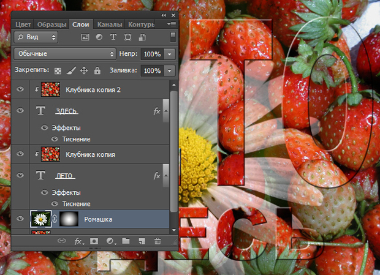Рис. 10.1. Палитра Слои для многослойного изображения
Совет
Чтобы подобное изображение сохранить на диск как многослойное, необходимо выполнить команду Файл-Сохранить Как и задать Тип файла TIFF или PSD ( рис. 10.2).
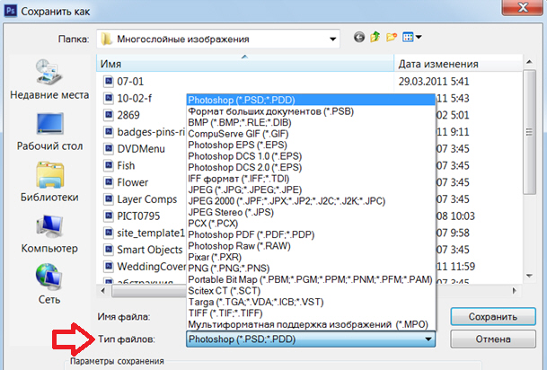Рис. 10.2. Выбор графического формата для сохранения многослойного изображения на диск
Давайте создадим в качестве примера некое многослойное изображение, состоящее из трех слоев и фона. Выполните команду Файл-Создать и создайте рабочий лист не белый, как обычно, а прозрачный, как стекло ( рис. 10.3).
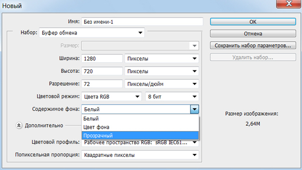Рис. 10.3. Создает для работы прозрачный фон
Теперь нарисуйте прямоугольник. Затем, выполните команду Слой-Новый-Слой ( рис. 10.4), нарисуйте окружность и закрасьте ее.
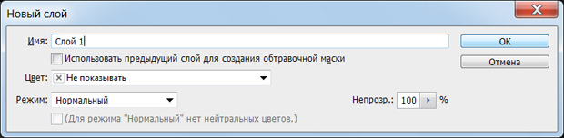Рис. 10.4. Окно создания нового слоя
И, наконец, создайте еще один слой, а в нем - закрашенный многоугольник. Вот что получилось ( рис. 10.5). Как видим, в самом верхнем слое "пачки слоев" расположен многоугольник.
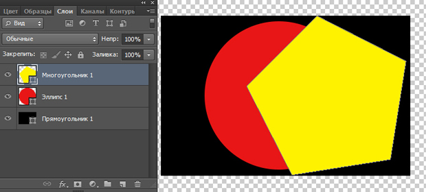Рис. 10.5. На прозрачном фоне лежит стопка из трех фигур
На палитре Слои вы всегда можете изменить порядок следования слоев, перетащив, например, верхний слой под нижний. Для этого нужно захватить слой (установить на него курсор, нажать и удерживать левую кнопку мыши), перетащить его к новому месту локализации и отпустить кнопку мыши. Так, на рис. 10.6 мы перетащили слой с кругом в верхнюю часть стопки слоев - вид результирующей картинки изменился соответственно.
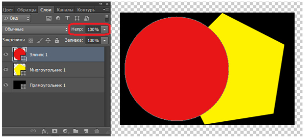Рис. 10.6. Круг в стопке слоев теперь лежит сверху
В этом рисунке обратите внимание на ползунок Непр. 100%. Если верхний слой в стопке слоев делать полупрозрачным (двигая ползунок Непрозрачность), то этим приемом несложно создавать различные художественные коллажи ( рис. 10.7).
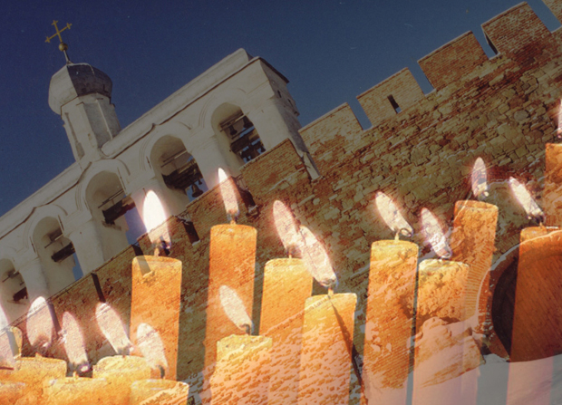Рис. 10.7. Коллаж на основе двух изображений
Если вы разобрались с тем, что такое слои, то принцип создания таких коллажей также должен быть вам понятен ( рис. 10.8).
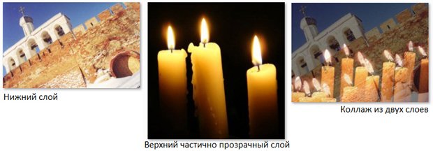Рис. 10.8. Коллаж на основе непрозрачного и полупрозрачного изображений
Смешиваем слои и делаем загар
На палитре Слои можно выбрать различные варианты наложения слоев, которые определяют, каким образом пиксели активного слоя взаимодействуют с пикселями других слоев, расположенных под ними. Посмотрим, как это можно использовать на практике для создания загара ( рис. 10.9).
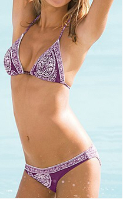Рис. 10.9. Исходный снимок для работы
Продублируйте слой с изображением девушки, выполнив команду Слои-Создать дубликат слоя ( рис. 10.10).
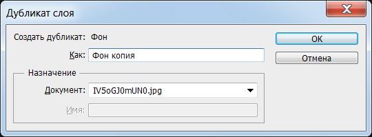Рис. 10.10. Окно Дубликат слоя
Теперь откройте палитру слои ( рис. 10.11).
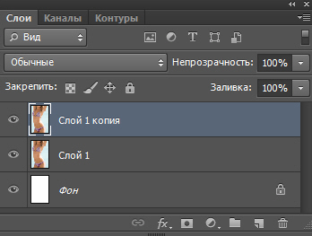Рис. 10.11. Палитра Слои
Для слоя Копия выполните команду Фильтр-Галерея фильтров-Штрихи-Темные штрихи и настройте параметры фильтра следующим образом: Баланс - 7, Содержание черного - 3, Содержание белого - 5 ( рис. 10.12). Нажимаем ОК.
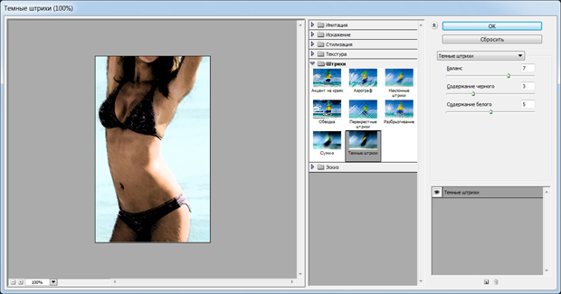Рис. 10.12. Работаем с фильтром для загара
Далее используем команду Фильтр-Размытие-Размытие по Гауссу с радиусом размытия 5 пикселей ( рис. 10.13).
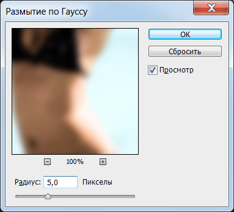Рис. 10.13. Окно фильтра Размытие по Гауссу
И, наконец, для завершения примера перейдите на палитру Слои и используйте режим наложения слоев Мягкий свет - рис. 10.14.
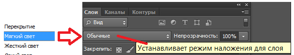Рис. 10.14. Здесь показан список режимов наложения слоев
Для сравнения исходный и итоговый снимки приведены на рис. 10.15.
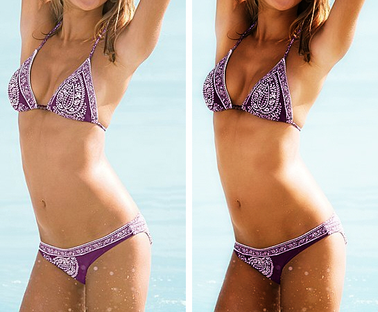Рис. 10.15. В исходный снимок внесен загар
Описанный здесь эффект загара можно усилить до такой степени, что европеец превратится в африканца. Пример ниже можно использовать как первоапрельскую шутку - здесь будет показано, как используя режимы смешивания слоев вы можете превратить снимок вашего знакомого (или ваше собственное фото) в фотографию негра. Исходное изображение приведено на рис. 10.16.
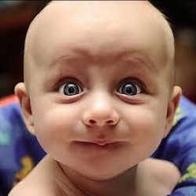Рис. 10.16. Оригинальное фото для выполнения примера
Выполним команду Слой-Новый-Слой-ОК, затем активируем инструмент Кисть и "окунем" ее в серый цвет: R=88, G=85, B=85 - рис. 10.17.
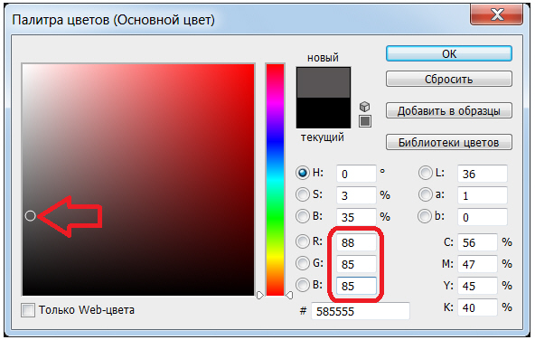Рис. 10.17. Выбираем темно-серый цвет
Настроив параметры кисти на панели ее атрибутов, обведем ей лицо и тело объекта (без глаз и губ) - рис. 10.18.
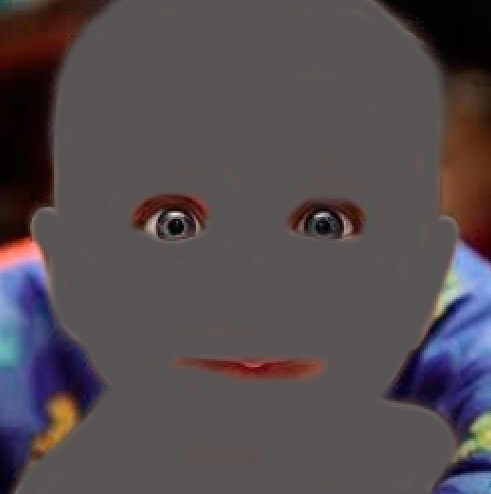Рис. 10.18. Созданный нами слой закрашен серым цветом
Совет
Если контур объекта вами обведен неточно - используйте инструмент Ластик и исправьте такую ситуацию.
Теперь на палитре Слои выберите режим смешивания нового слоя и фона как Линейный затемнитель ( рис. 10.19).
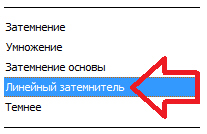Рис. 10.19. На палитре слои в режиме Линейный затемнитель смешиваем два слоя
Степень загара можно менять, меняя положение ползунка Непрозрачность - рис. 10.20.
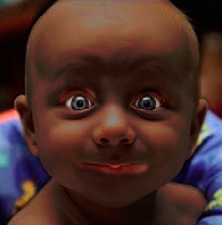Рис. 10.20. На фото европеец превратился в негра